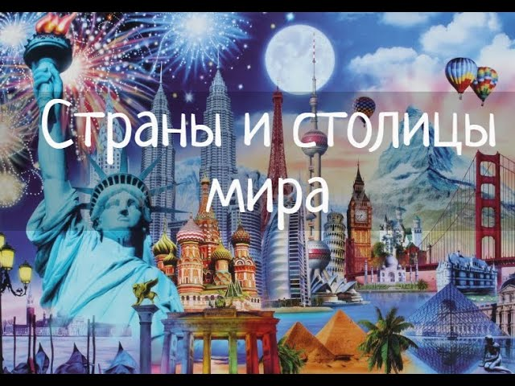
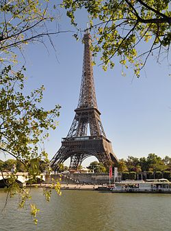
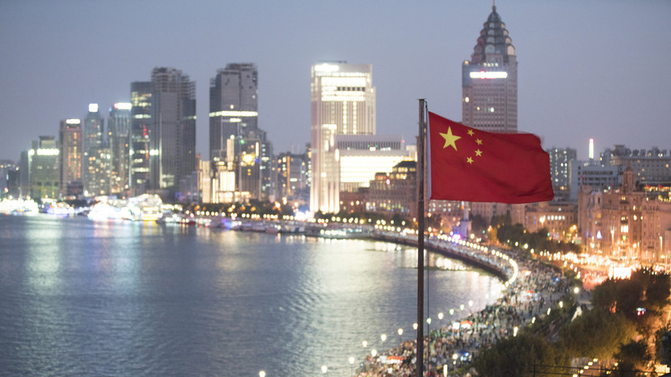

Слова страна (в политико-географическом её понимании) и государство обозначают близкие по смыслу, но не тождественные понятия, хотя в ряде случаев термин страна используется в качестве полного синонима государства (в таких случаях подразумевается политическая страна как территория государства). Понятие государства охватывает, в первую очередь, структуру господства, установившуюся на определённой территории и беспрерывно возобновляющуюся вследствие совместных действий людей. Напротив, понятие страны имеет более ёмкое культурно-историческое, социально-экономическое содержание, нежели политическое, в связи с чем включает в себя понятия, определяющие особенности местного национального сообщества (менталитет, обычаи, язык и т. д.). Как отмечал Д. С. Лихачёв, страна есть единство народа, природы и культуры. В связи с этим, в частности, предметом страноведения являются как территории, очерченные государственными, так и историко-географическими границами, а также предполагается, что понятие страны сохранится и в случае исчезновения в будущем государственных границ. На практике наиболее яркими примерами расхождений между понятиями страны и государства являются колониальные империи, рассматривавшиеся в качестве суверенных государств, но не в качестве единых стран. Другим показательным примером является представление о разрушении одних государств и строительстве других на полностью или по большей части совпадающих территориях стран, сохраняющих экономическую и историко-культурную преемственность.
Крушение колониального мироустройства и построение международных отношений на принципах Организации Объединённых Наций не разрешило до конца проблемы имеющих некоторые признаки государственности несуверенных территорий. Степень самостоятельности не имеющих государственного суверенитета стран колеблется в широких пределах. Однако по большей части они являются частью государства или нескольких государств на правах заморских особо управляемых территорий (например, Британские Виргинские острова, Нидерландские Антильские острова, Американское Самоа и др.) с отличиями в гражданском статусе местного населения. Многие народы, в настоящее время не имеющие суверенного государства, вели и ведут так называемые освободительные войны, или проявляют действия (часто террористические) других организаций. В настоящее время примером могут служить борющиеся за независимость Курдистан от Турции, Палестина от Израиля, Восточный Туркестан от Китая, а также Тибет, Страна Басков, Восточный Тимор (в последнем случае уже восстановлено государство) и др. В одних случаях это бывшие государства, в других — страны, не имевшие государственности. Несоответствие границ стран и государств достаточно распространённое явление в Азии. Кроме того принято выделять страны разного масштаба, называя наиболее мелкие территории историческими областями (так, например, Восточный Туркестан, будучи частью Туркестана, сам состоит из двух стран: Кашгарии и Джунгарии). В то же время большое количество примеров стран вне государственных границ можно найти и в Европе: Лапландия (территория распределена между королевствами Норвегия и Швеция, Финляндской республикой и Российской Федерацией), Трансильвания (полностью входит в Румынскую республику), Окситания (часть Французской республики). Страны и государства обычно имеют различные названия (Германия и Федеративная республика Германия, Франция и Французская республика, Россия и Российская Федерация). Однако в случае с государствами, объединяющими несколько стран, могут использовать нейтральные объединительные названия для синтетически образовываемой политической страны. Например, Бельгией называется политическая страна, объединяющая страну фламандцев и страну валлонов, Великобританией — англичан, шотландцев и валлийцев, Испанией называется политическая страна, в которую входят Кастилия, Андалузия, Каталония и др. страны (используемые языки: галисийский, каталонский и кастильский, — последний в мире традиционно называется испанским), Грузией (на грузинском языке нет точного соответствия этому слову — для них их страна называется Сакартвело, то есть Картвелия, — собственно Картли находится с Кахетией в восточной части территории) называют политическую страну, в которой привычно объединены восточные исторические области и западные исторические области, то есть в культурном и языковом плане допустимо говорить о двух странах — собственно Грузии или исторической Иверии (восточная часть, то есть Картли для грузин) и Колхиде или Мингрелии (западная часть, Сванетия, Мингрелия и Имеретия, в которой кроме распространившегося в последнее время литературного собственно картвельского (грузинского) используются мегрельский язык и сванский язык). Показательным примером нейтрального названия политической страны, выбранного для государства, объединяющего несколько стран, является Иран, именуемый иногда Персией, культура и язык которой доминируют в этом государстве.
Пари́ж (фр. Paris [paˈʁi] Информация о файле слушать) — столица и крупнейший город во Франции. Находится на севере государства, в центральной части Парижского бассейна, на р. Сена. Население 2,2 млн человек (2016)[3]. Центр агломерации Большой Париж (6,6 млн), являющийся ядром исторического региона Иль-де-Франс (более 12 млн). Образует коммуну и департамент, разделённый на 20 округов. Относится к глобальным городам и мировым финансовым центрам. Здесь располагаются штаб-квартиры ЮНЕСКО и других международных организаций. Исторический центр, образованный островом Сите и обоими берегами Сены, складывался на протяжении веков. Во второй половине XIX века претерпел коренную реконструкцию. В пригороде расположен дворцово-парковый ансамбль Версаль. Основан в III веке до н. э. кельтским племенем паризиев. С III—IV веков известен как галло-римский город Паризии. С конца X века с перерывами является столицей Франции
 ДалееРеспу́блика Коре́я (кор. 대한민국?, 大韓民國? Тэханмингук, устар. Коре́йская Респу́блика[7]) — государство в Восточной Азии, широко известное под неофициальным названием Ю́жная Коре́я. Республика Корея была официально образована в 1948 году в южной части Корейского полуострова на территории, контролировавшейся Японской империей до окончания Второй Мировой войны. Окончательно современные границы государства были определены по результатам войны с Северной Кореей в 1953 годуПерейти к разделу «#История». Имеет единственную сухопутную границу с Северной Кореей, с запада омывается Жёлтым морем, с востока — Японским морем, а с юга — Корейским проливом и Восточно-Китайским моремПерейти к разделу «#География».
 Далее
Далее
Япо́ния (яп. 日本 Нихон, Ниппон, букв. «место, где восходит Солнце»), официальное название — Госуда́рство Япо́ния, — островное государство в Восточной Азии. Находится в Тихом океане к востоку от Японского моря, Китая, Северной и Южной Кореи, России. Занимает территорию от Охотского моря на севере до Восточно-Китайского моря и Тайваня на юге. Поэтическое название — Страна восходящего солнца. Расположена на Японском архипелаге, состоящем, по подсчётам властей страны, из 6852 островов. Четыре крупнейших острова — Хонсю, Хоккайдо, Кюсю и Сикоку — составляют свыше 95 % общей площади архипелага. Большинство островов горные, многие вулканические. Высшая точка Японии — вулкан Фудзияма (3776 м). С населением почти 126 миллионов человек, Япония занимает одиннадцатое место в мире. Большой Токио, включающий в себя столицу Японии Токио и несколько близлежащих префектур, с населением более 30 миллионов человек является крупнейшей городской агломерацией в мире. По форме государственного устройства Япония — децентрализованное унитарное государство, по форме государственного режима — демократическое государство. Являясь великой экономической державой, Япония занимает третье место в мире по номинальному ВВП и четвёртое по ВВП, рассчитанному по паритету покупательной способности. Япония является четвёртым по величине экспортёром и шестым по величине импортёром. Япония — развитая страна с очень высоким уровнем жизни (девятнадцатое место по индексу развития человеческого потенциала). В Японии одна из самых высоких ожидаемых продолжительностей жизни (в 2017 году она составила 85,3 года) и один из самых низких уровней младенческой смертности. Япония входит в число стран — членов «Большой семёрки» и АТЭС, а также регулярно избирается непостоянным членом Совета Безопасности ООН. Япония официально отказалась от своего права объявлять войну, но она имеет силы самообороны, которые используются также и в миротворческих операциях. Япония является единственной страной в мире, против которой было применено ядерное оружие. Император Японии — Нарухито (с 1 мая 2019 года), премьер-министр Японии — Фумио Кисида (с 4 октября 2021 года), председатель Либерально-демократической партии Японии (с 29 сентября 2021 года).
.jpg) Далее
Далее
Кита́й (кит. трад. 中國, упр. 中国, пиньинь Zhōngguó, палл. Чжунгуо); официальное название — Кита́йская Наро́дная Респу́блика (КНР), (кит. трад. 中華人民共和國, упр. 中华人民共和国, пиньинь Zhōnghuá Rénmín Gònghéguó, палл. Чжунхуа Жэньминь Гунхэго) — государство в Восточной Азии. Занимает третье место в мире по территории (9 598 962 км2), уступая России и Канаде, а по численности населения — 1 415 515 674 жителей — второе, уступая Индии. Большинство населения — этнические китайцы, самоназвание — хань. Китайская Народная Республика, согласно конституции, — социалистическое государство. Является великой державой — потенциальной сверхдержавой, экономической сверхдержавой, постоянным членом Совета безопасности ООН. Одна из ведущих космических держав мира, обладает ядерным оружием и крупнейшей в мире армией по численности военнослужащих. Китайская экономика является второй экономикой мира по номинальному ВВП и первой экономикой мира по ВВП (ППС). КНР является мировым лидером по производству большинства видов промышленной продукции. Крупнейший мировой экспортёр («фабрика мира») и один из главных рынков сбыта. Располагает наибольшими в мире золотовалютными резервами. В 2019 году занял второе место после США по расходам на НИОКР (526 млрд против 658 млрд $ США). В 2021 году поднялся на 12 место в Глобальном инновационном индексе. Дельта Жемчужной реки и Пекин расположились на второй и третьей строках в мировом рейтинге научно-технических кластеров. КНР состоит в таких международных организациях, как ООН, ВТО, АТЭС, G20, БРИКС, ШОС. Китай инициировал создание «Одного пояса и одного пути». Со времени провозглашения Китайской Народной Республики в 1949 году правящей партией является Коммунистическая партия Китая (КПК). Председателем КНР является Си Цзиньпин (с 2013 года). Международные специалисты отмечают, что Китай, несмотря на мощный экономический рост, не имеет демократии и является авторитарной диктатурой
 Далее